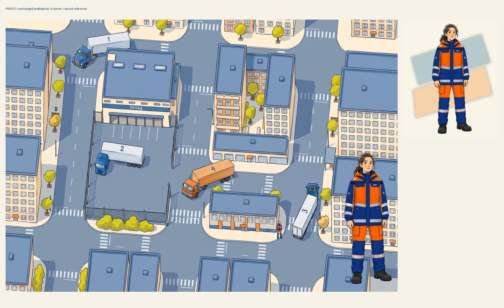
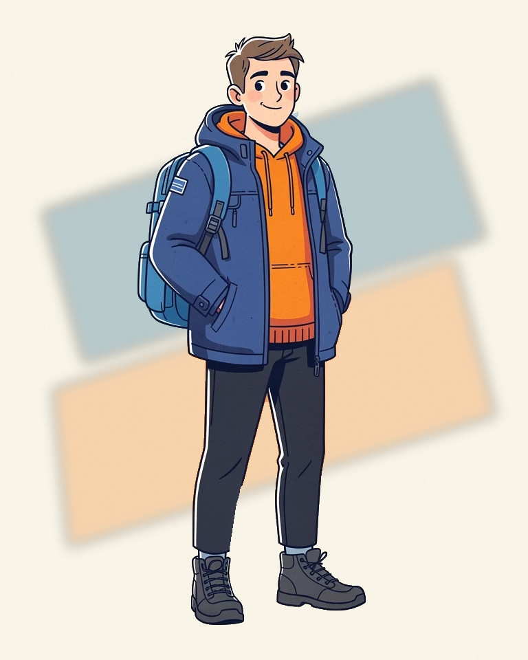
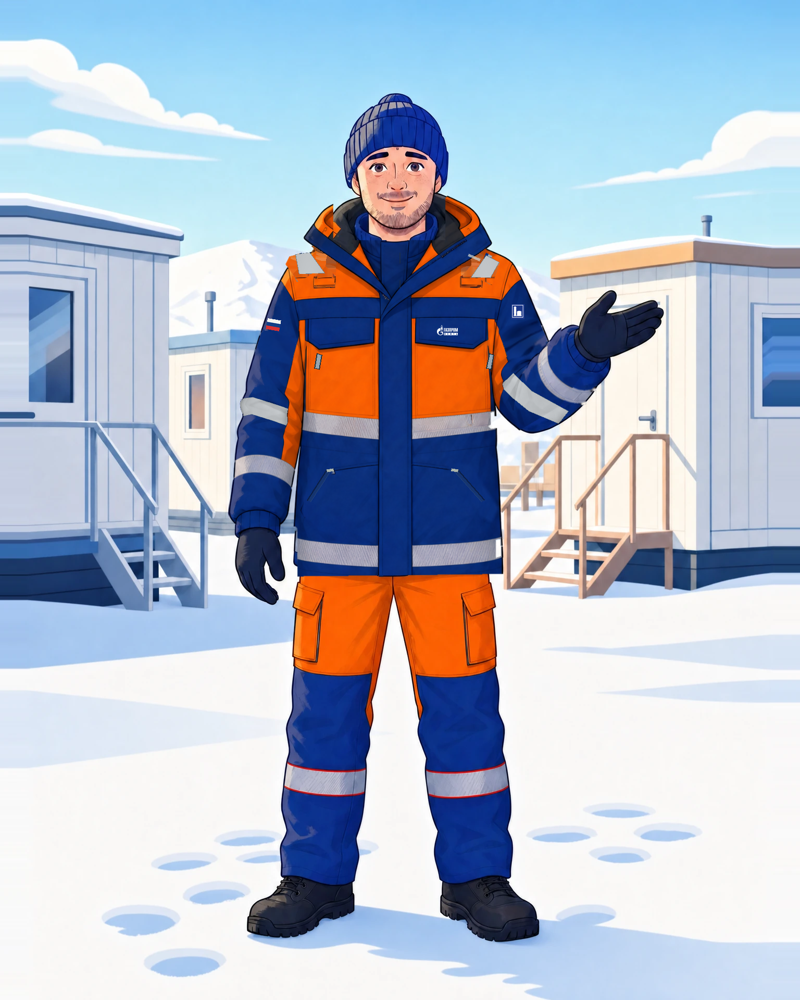
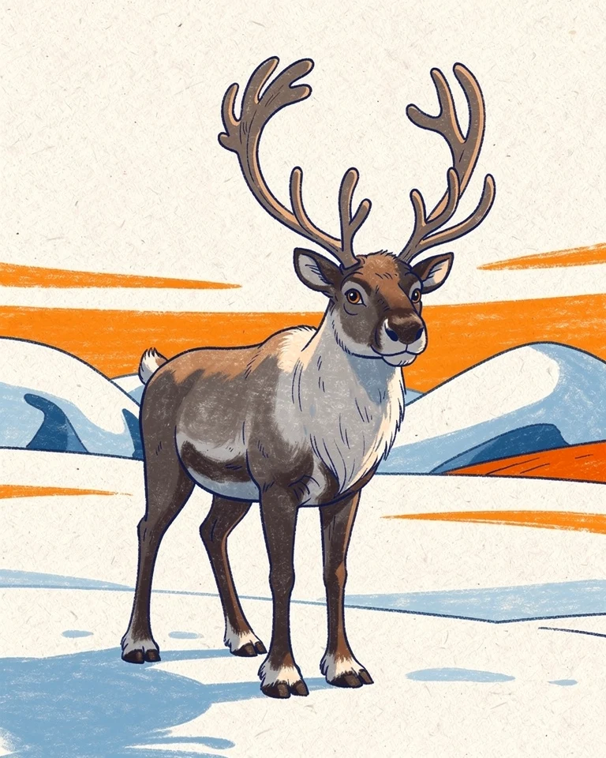
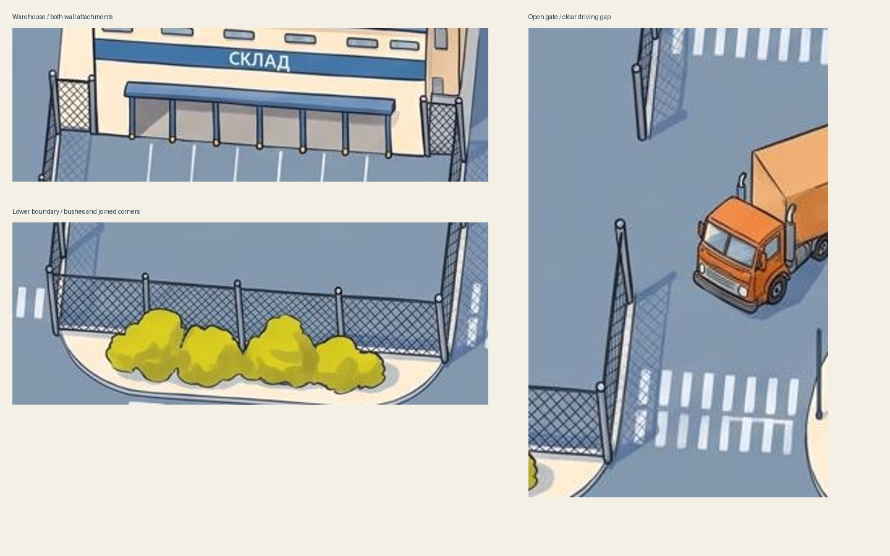
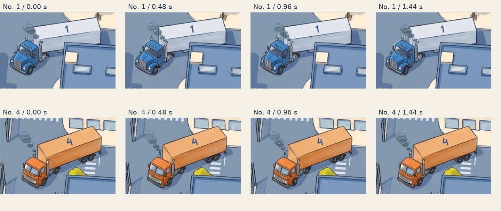

Машины и выхлоп крупно
Дым выходит из труб за кабинами №1 и №4. Это та же анимация, что на общей карте, а не отдельный эффект для крупного плана.
Девушка-профессионал внутри сцены
Исходная девушка без перерисовки и изменения цвета. Внутри города — проверка масштаба; крупно на переднем плане — сравнение рисовки. Оригинал справа.





Забор: соединения и открытый въезд
Секции соединены со складом и друг с другом у кустов. Углы огибают тротуар, въезд оставлен открытым. Исправленная исходная геометрия проверена на 3072 положениях машин: пересечений с забором нет. Художественная картинка не является точной проекцией этой геометрии.

Как меняется дым
Четыре момента работающего эффекта: клубы появляются у трубы, поднимаются и рассеиваются.
